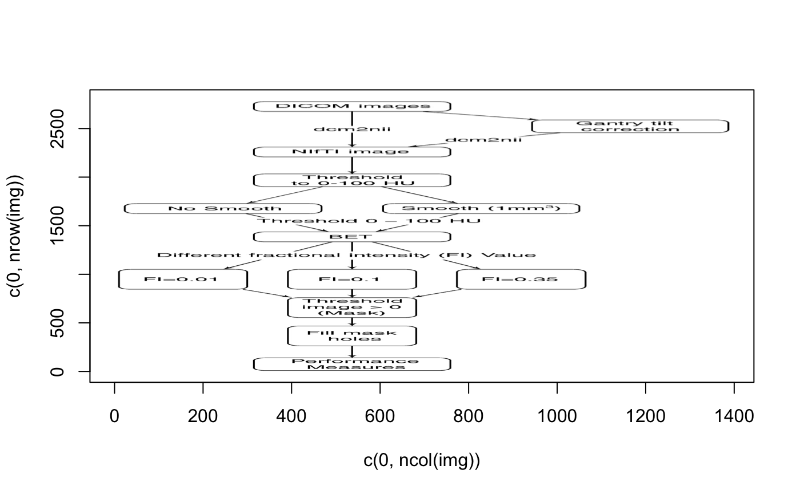

This function wraps generic_elsevier_api to give a
retrieval of an object from the Elsevier Object Retrieval API
object_retrieval(id, identifier = c("scopus_id", "eid", "doi", "pii", "pubmed_id"), ref = NULL, http_end = NULL, ...)
| id | Identifier for object |
|---|---|
| identifier | Type of identifier to use |
| ref | document reference |
| http_end | any additional end to http statement.
See |
| ... | Arguments to be passed to |
List of elements, similar to generic_elsevier_api
api_key = get_api_key(NULL, error = FALSE) if (!is.null(api_key)){ x = object_retrieval("S1053811915002700", identifier = "pii", verbose = FALSE) if (requireNamespace("xml2") & requireNamespace("httr") & requireNamespace("rvest") ){ refs = httr::content(x$get_statement, "text") refs = xml2::read_xml(refs) refs = rvest::xml_nodes(refs, "choice") texts = xml2::xml_text(refs) types = xml2::xml_attr(refs, "type") refs = xml2::xml_attr(refs, "ref") df = data.frame(ref = refs, type = types, text = texts, stringsAsFactors = FALSE) df = df[ grepl("image/jpeg", df$text),,drop = FALSE ] df = df[ df$type %in% "IMAGE-HIGH-RES",,drop = FALSE ] #r = httr::GET(url = df$text[1], # query = list("apiKey" = api_key)) query = paste0("apiKey=", api_key) r = httr::GET(paste0(df$text[1], "&", query)) img = httr::content(r) dims = dim(img)[1:2] mdim = max(dims) graphics::plot(c(0, ncol(img)), c(0, nrow(img)), type='n') graphics::rasterImage(img, 1, 1, ncol(img), nrow(img)) } obj = object_retrieval('S1053811915002700', "pii", verbose = FALSE) }